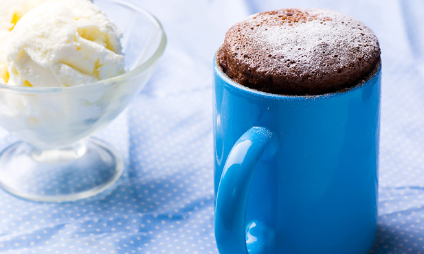

Cup cake

Recipe description
A very fast and good recipe for when you're feeling like having a chocolate
cake but you are in hurry
Ingredients
- 1 ovo
- 2 colheres (sopa) de achocolatado em pó
- 3 colheres (sopa) rasas de açúcar
- 4 colheres (sopa) rasas de farinha de trigo
- 1 colher (sopa) de óleo
- 1 colher (café) rasa de fermento em pó
- 4 colheres (sopa) de leite
Steps
- Coloque todos os ingredientes dentro de uma caneca de aproximadamente 300 ml ou mais.
- Mexa até obter uma massa homogênea e leve ao micro-ondas por 3 minutos.
Voltar ao Index